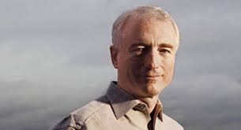

Larry Tesler

Larry Tesler The Creator of Copy and Paste
Lawrence Gordon Tesler (April 24, 1945 – February 16, 2020) was an American computer scientist who worked in the field of human–computer interaction. Tesler worked at Xerox PARC, Apple, Amazon, and Yahoo! While at PARC, Tesler's work included Smalltalk, the first dynamic object-oriented programming language, and Gypsy, the first word processor with a graphical user interface for the Xerox Alto. During this, along with colleague Tim Mott, Tesler developed the idea of copy and paste functionality and the idea of modeless software. While at Apple, Tesler worked on the Apple Lisa and the Apple Newton, and helped to develop Object Pascal and its use in application programming toolkits including MacApp.
More information on Larry Tesler